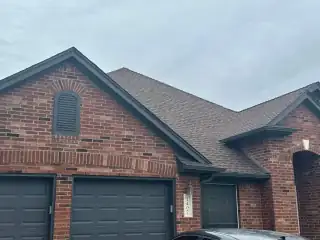

4.9 on 474 Google reviewsGAF Master EliteJames Hardie Elite PreferredSince 2009
886 jobs, documented and dated
312 on the map with photos + 574 more counted. 177 of them have a before and an after, each with its real price.

4.9 on 474 Google reviewsGAF Master EliteJames Hardie Elite PreferredSince 2009
886 jobs, documented and dated
312 on the map with photos + 574 more counted. 177 of them have a before and an after, each with its real price.
4.9 on 474 Google reviewsGAF Master EliteJames Hardie Elite PreferredSince 2009
886 jobs, documented and dated
- 886documented jobs
- 312on the map with photos
- 177before-and-after pairs
- 5,000+Central Texas homes since 2009, by the firm's own count
312 on the map with photos + 574 more counted. 177 of them have a before and an after, each with its real price.
886 jobs, documented and dated
312 on the map with photos + 574 more counted. 177 of them have a before and an after, each with its real price.
4.9 on 474 Google reviewsGAF Master EliteJames Hardie Elite PreferredSince 2009
886 jobs, documented and dated
312 on the map with photos + 574 more counted. 177 of them have a before and an after, each with its real price.
886 jobs, documented and dated
312 on the map with photos + 574 more counted. 177 of them have a before and an after, each with its real price.
What do you want to know first?
Before, after, and the price
One button, the same wall twice.


Questions about any of it? Call (512) 550-0000 or book a free inspection
Before, after, and the price
One button, the same wall twice.
Questions about any of it? Call (512) 550-0000 or book a free inspection
Before, after, and the price
Point at one, or tap it, to see it after.
Rob Roy, Austin Jul 2026 · $15k-$20k
Milwood, Austin May 2026 · $25k-$30k
Maple Run, Austin Oct 2025 · $10k-$15k
Maple Run, Austin Jul 2026 · $15k-$20k
Anderson Mill, Austin Sep 2026 · $15k-$20k
Ridgewood, Cedar Park Jul 2023 · $10k-$15k
Questions about any of it? Call (512) 550-0000 or book a free inspection
Before, after, and the price
1 of 6
Before After Rob Roy, Austin, Jul 2026: James Hardie Select Cedar Mill Lap 8.25". Siding portion $15k-$20k.
Before After Milwood, Austin, May 2026: HardiePlank Select Cedar Mill 8.25". Siding portion $25k-$30k.
Before After Maple Run, Austin, Oct 2025: NT Windows vinyl. Windows portion $10k-$15k.
Before After Maple Run, Austin, Jul 2026: HardiePlank Select Cedar Mill 8.25". Siding portion $15k-$20k.
Before After Anderson Mill, Austin, Sep 2026: NT Windows Executive. Windows portion $15k-$20k.
Before After Ridgewood, Cedar Park, Jul 2023: NT Windows Twinsulator. Windows portion $10k-$15k.
Questions about any of it? Call (512) 550-0000 or book a free inspection
Before, after, and the price
Each finished job with its published band.
| Rob Roy, Austin | James Hardie Select Cedar Mill Lap 8.25" | Jul 2026 | $15k-$20k |
|---|---|---|---|---|
| Milwood, Austin | HardiePlank Select Cedar Mill 8.25" | May 2026 | $25k-$30k |
| Maple Run, Austin | NT Windows vinyl | Oct 2025 | $10k-$15k |
| Maple Run, Austin | HardiePlank Select Cedar Mill 8.25" | Jul 2026 | $15k-$20k |
| Anderson Mill, Austin | NT Windows Executive | Sep 2026 | $15k-$20k |
| Ridgewood, Cedar Park | NT Windows Twinsulator | Jul 2023 | $10k-$15k |
Questions about any of it? Call (512) 550-0000 or book a free inspection
Before, after, and the price
Milwood, Austin $25k-$30k
Maple Run, Austin $10k-$15k
Maple Run, Austin $15k-$20k
Anderson Mill, Austin $15k-$20k
Ridgewood, Cedar Park $10k-$15k
Questions about any of it? Call (512) 550-0000 or book a free inspection
Every photo is a finished job
Every photo is a finished job, with where and when.




Questions about any of it? Call (512) 550-0000 or book a free inspection
Every photo is a finished job
Every photo is a finished job, with where and when.
Questions about any of it? Call (512) 550-0000 or book a free inspection
Every photo is a finished job
Scroll along the finished jobs.

Siding & Exterior Painting, Maple Run, Austin, Feb 2026 Siding, Gutters & Exterior Painting, Austin, Sep 2026 Siding & Exterior Painting, Anderson Mill West, Cedar Park, Aug 2026 
Siding, Exterior Painting & Gutters, Maple Run, Austin, Jul 2026 Windows, Austin, Sep 2026 Windows, Exterior Painting & Siding, Anderson Mill West, Cedar Park, Aug 2026 Windows, Barrington Oaks, Austin, Jul 2026 Windows, Windermere, Pflugerville, Jul 2026 Shingle Roofing, Pflugerville, Oct 2025 Shingle Roofing, Fairview, Round Rock, Jun 2025 Shingle Roofing, Gutters, Exterior Painting & Windows, Creekview, Round Rock, Nov 2024 Metal Roofing, North Austin, Austin, Jun 2026 Metal Roofing & Siding, Hillside Vista, Austin, Aug 2026 
Metal Roofing, Buttercup Creek, Cedar Park, Mar 2025 Patio Covers, Round Rock, Sep 2025 Windows, Patio Covers & Siding, Shady Hollow, Austin, Jan 2025 Doors, Rivers Edge, Georgetown, Apr 2026 Siding & Doors, Steeds Crossing, Pflugerville, Jun 2026 Siding, Exterior Painting & Garage Doors, Anderson Mill West, Cedar Park, Dec 2025 
Siding & Exterior Painting, Block House Creek, Leander, Sep 2026 Siding & Exterior Painting, Georgetown, Sep 2026 Shingle Roofing, Gutters & Exterior Painting, Pflugerville, Dec 2025 Siding, Shingle Roofing & Exterior Painting, Ashford Park, Buda, Jul 2026
Questions about any of it? Call (512) 550-0000 or book a free inspection
Every photo is a finished job
1 of 26
Siding & Exterior Painting, Maple Run, Austin, Feb 2026 Siding, Exterior Painting & Gutters, Maple Run, Austin, Jul 2026 Metal Roofing, Buttercup Creek, Cedar Park, Mar 2025 Patio Covers, Tarrytown, Austin, Dec 2024 Siding & Exterior Painting, Block House Creek, Leander, Sep 2026 Windows, Siding, Gutters & Exterior Painting, East Oak Hill, Austin, Sep 2026 Shingle Roofing, Siding, Patio Covers, Windows & Exterior Painting, Maple Run, Austin, Nov 2024 Siding, Gutters & Exterior Painting, Austin, Sep 2026 Siding & Exterior Painting, Anderson Mill West, Cedar Park, Aug 2026 Windows, Austin, Sep 2026 Windows, Exterior Painting & Siding, Anderson Mill West, Cedar Park, Aug 2026 Windows, Barrington Oaks, Austin, Jul 2026 Windows, Windermere, Pflugerville, Jul 2026 Shingle Roofing, Pflugerville, Oct 2025 Shingle Roofing, Fairview, Round Rock, Jun 2025 Shingle Roofing, Gutters, Exterior Painting & Windows, Creekview, Round Rock, Nov 2024 Metal Roofing, North Austin, Austin, Jun 2026 Metal Roofing & Siding, Hillside Vista, Austin, Aug 2026 Patio Covers, Round Rock, Sep 2025 Windows, Patio Covers & Siding, Shady Hollow, Austin, Jan 2025 Doors, Rivers Edge, Georgetown, Apr 2026 Siding & Doors, Steeds Crossing, Pflugerville, Jun 2026 Siding, Exterior Painting & Garage Doors, Anderson Mill West, Cedar Park, Dec 2025 Siding & Exterior Painting, Georgetown, Sep 2026 Shingle Roofing, Gutters & Exterior Painting, Pflugerville, Dec 2025 Siding, Shingle Roofing & Exterior Painting, Ashford Park, Buda, Jul 2026
Questions about any of it? Call (512) 550-0000 or book a free inspection
Every photo is a finished job
The finished jobs, listed with where, when and what went on.
- Feb 2026Maple Run, AustinSiding & Exterior Painting
- Sep 2026AustinSiding, Gutters & Exterior Painting
- Aug 2026Anderson Mill West, Cedar ParkSiding & Exterior Painting
- Jul 2026Maple Run, AustinSiding, Exterior Painting & Gutters
- Sep 2026AustinWindows
- Aug 2026Anderson Mill West, Cedar ParkWindows, Exterior Painting & Siding
- Jul 2026Barrington Oaks, AustinWindows
- Jul 2026Windermere, PflugervilleWindows
- Apr 2026Lavaca Loop, ElginShingle Roofing
- Oct 2025PflugervilleShingle Roofing
- Jun 2025Fairview, Round RockShingle Roofing
- Nov 2024Creekview, Round RockShingle Roofing, Gutters, Exterior Painting & Windows
- Jun 2026North Austin, AustinMetal Roofing
- Aug 2026Hillside Vista, AustinMetal Roofing & Siding
- Sep 2025Lakevista, BurnetMetal Roofing
- Mar 2025Buttercup Creek, Cedar ParkMetal Roofing
- Sep 2025Round RockPatio Covers
- Jan 2025Shady Hollow, AustinWindows, Patio Covers & Siding
- Dec 2024Tarrytown, AustinPatio Covers
- Nov 2024Legend Oaks, AustinPatio Covers
- Apr 2026Rivers Edge, GeorgetownDoors
- Nov 2025Heritage Hills, AustinDoors & Windows
- May 2025Milwood, AustinDoors
- Jun 2026Steeds Crossing, PflugervilleSiding & Doors
- Dec 2025Anderson Mill West, Cedar ParkSiding, Exterior Painting & Garage Doors
- Nov 2025Legend Oaks, AustinSiding, Shingle Roofing, Windows, Doors, Exterior Painting, Garage Doors & Gutters
- Feb 2026East Austin, AustinGarage Doors
- Mar 2026Jester Estates, AustinSiding, Exterior Painting & Garage Doors
- Sep 2026Block House Creek, LeanderSiding & Exterior Painting
- May 2026AustinShingle Roofing, Windows & Siding
- Sep 2026AustinSiding, Gutters & Exterior Painting
- Apr 2026Legend Oaks, AustinShingle Roofing
- Sep 2025Lakevista, BurnetMetal Roofing
- Sep 2026GeorgetownSiding & Exterior Painting
- Dec 2025PflugervilleShingle Roofing, Gutters & Exterior Painting
- Aug 2026Canyon Ridge, AustinSiding & Exterior Painting
- Jul 2026Ashford Park, BudaSiding, Shingle Roofing & Exterior Painting
- Sep 2026East Oak Hill, AustinWindows, Siding, Gutters & Exterior Painting
- Aug 2026Anderson Mill West, Cedar ParkWindows, Exterior Painting & Siding
- Nov 2025Heritage Hills, AustinDoors & Windows
- Jun 2026Bull Creek, AustinWindows & Doors
- Nov 2024Maple Run, AustinShingle Roofing, Siding, Patio Covers, Windows & Exterior Painting
- May 2026River Place, AustinWindows
Questions about any of it? Call (512) 550-0000 or book a free inspection
Every photo is a finished job
A contact sheet of the finished work.
Maple Run, AustinFeb 2026
AustinSep 2026
Anderson Mill West, Cedar ParkAug 2026
Maple Run, AustinJul 2026
AustinSep 2026
Anderson Mill West, Cedar ParkAug 2026
Barrington Oaks, AustinJul 2026
Windermere, PflugervilleJul 2026
Questions about any of it? Call (512) 550-0000 or book a free inspection
Where the work is
Documented jobs by town, from the firm's own project file.
- 01Austin541
- 02Round Rock110
- 03Cedar Park35
- 04Leander28
- 05Pflugerville28
- 06Georgetown21
- 07San Marcos10
- 08Buda8
- 09Temple8
- 10Bastrop6
Questions about any of it? Call (512) 550-0000 or book a free inspection
Where the work is
Documented jobs by town, from the firm's own project file.
- 01Austin541
- 02Round Rock110
- 03Cedar Park35
- 04Leander28
- 05Pflugerville28
- 06Georgetown21
- 07San Marcos10
- 08Buda8
- 09Temple8
- 10Bastrop6
Questions about any of it? Call (512) 550-0000 or book a free inspection
Month by month
The 312 photographed jobs on the map, by the month they were photographed. Darker is busier; the busiest month had 13.
Questions about any of it? Call (512) 550-0000 or book a free inspection
How far from the office
Rings at 5, 10, 20 and 40 miles from 7801 N Lamar Blvd, measured on the firm's own map.
- 54within 5 miles
- 143within 10 miles
- 289within 20 miles
- 307within 40 miles
- 312photographed jobs on the map
Questions about any of it? Call (512) 550-0000 or book a free inspection
Town by town, card by card
The eight busiest towns, each with its latest photographed job.
Austin
541 documented jobs
Latest photographed: Austin, Sep 2026
Round Rock
110 documented jobs
Latest photographed: Greenslopes at Lake Creek, Round Rock, Aug 2026
Cedar Park
35 documented jobs
Latest photographed: Anderson Mill West, Cedar Park, Aug 2026
Leander
28 documented jobs
Latest photographed: Block House Creek, Leander, Sep 2026
Pflugerville
28 documented jobs
Latest photographed: Windermere, Pflugerville, Jul 2026
Georgetown
21 documented jobs
Latest photographed: Georgetown, Sep 2026
San Marcos
10 documented jobs
Latest photographed: San Marcos, Aug 2025
Buda
8 documented jobs
Latest photographed: Ashford Park, Buda, Jul 2026
Questions about any of it? Call (512) 550-0000 or book a free inspection
The latest twelve
The most recent photographed jobs on the firm's map, newest first.
- Sep 2026Block House Creek, LeanderSiding, Exterior Painting
- Sep 2026HuttoShingle Roofing
- Sep 2026AustinWindows
- Sep 2026Anderson Mill, AustinWindows
- Sep 2026AustinSiding, Exterior Painting, Gutters
- Sep 2026East Oak Hill, AustinSiding, Windows, Exterior Painting, Gutters
- Sep 2026GeorgetownSiding, Exterior Painting
- Aug 2026Village At Western Oaks, AustinSiding, Exterior Painting
- Aug 2026Anderson Mill West, Cedar ParkSiding, Windows, Exterior Painting
- Aug 2026Greenslopes at Lake Creek, Round RockSiding, Windows, Exterior Painting
- Aug 2026Hillside Vista, AustinSiding, Metal Roofing
- Aug 2026Anderson Mill West, Cedar ParkSiding, Exterior Painting
Questions about any of it? Call (512) 550-0000 or book a free inspection